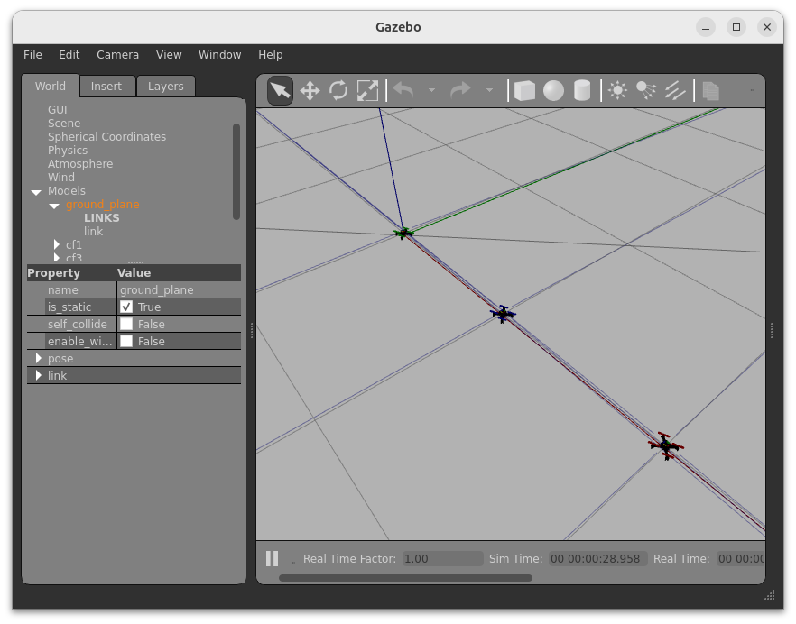
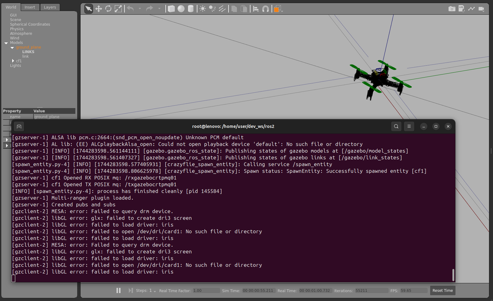
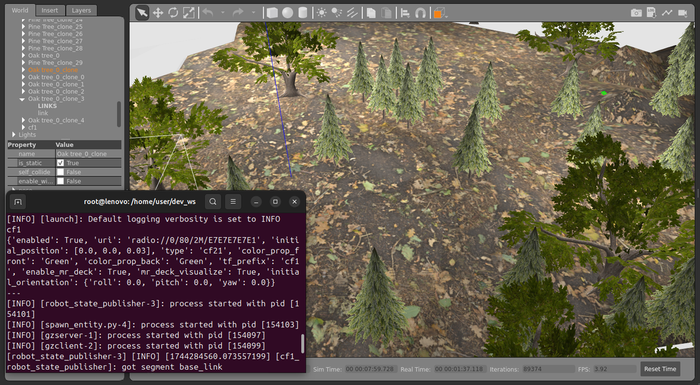

sim_cf2: A Gazebo Simulation Environment
This page presents a brief summary of the key commands to download and install the Docker container for the Gazebo-based drone simulator called sim_cf2.
(This is a compilation of the most important features taken from Container Setup Guide and the Usage Guide for sim_cf2.)

Installation
On your host system move into the root folder of the cps.asset.crazyflie GitHub project and execute the following commands:
$ cd ~/uniagent_ws/cps.asset.crazyflie/simulation/simulation-sim_cf2
$ chmod +x ./prepare.sh && ./prepare.sh
$ docker build --network=host -t cf2_ros2_simu -f .devcontainer/Dockerfile .
Building the image can take more than 5 minutes. This is plenty of time to prepare a coffee.
Starting
Execute the following to get to the entry point for starting the simulation.
First, allow the Docker container to access X server.
Then, start the Docker container cf2_ros2_simu:
$ xhost +local:root
non-network local connections being added to access control list
$ sudo docker run --rm -it \
--env ROS_DOMAIN_ID=30 \
--net=host --ipc=host --pid=host \
--env DISPLAY \
--volume /tmp/.X11-unix:/tmp/.X11-unix:rw \
cf2_ros2_simu
Now, you are in the Docker container inside the folder /home/user/dev_ws:
root@lenovo:/home/user/dev_ws#
Sharing USB Devices
Now, depending on whether you want to control a real Crazyflie, you need to share the USB devices such as the Crazyradio PA. Therefore, you need to add the following arguments to the command:
--device-cgroup-rule='c 189:* rmw' -v /run/udev:/run/udev:ro -v /dev:/dev \
Note: The
189is the USB device number of the Crazyradio PA. You can find the correct number by executinglsusbin the terminal. This is described in more detail in the Initial Setup Guide file.
Environment Variables
See this Guide on what the other variables mean, such as the ROS Domain ID to allow inter-container communication.
Usage
In the following, we will go through the basic steps:
- Configure the number & position of drones used in the simulation
- Start the basic simulation with an empty world or supply another world file
Drone Configuration File
(This file is aligned with the format used in the crazyswarm2 simulation package.)
Extract of the crazyflies.yaml file:
robots:
cf1:
enabled: true
uri: radio://0/80/2M/E7E7E7E7E1
initial_position: [0.0, 0.0, 0.03]
type: cf21 # Specify the robot type as in crazyswarm2
color_prop_front: Green
color_prop_back: Green
tf_prefix: cf1 # Prefix for TF for this specific drone
enable_mr_deck: true
mr_deck_visualize: true
initial_orientation:
roll: 0.0
pitch: 0.0
yaw: 0.0
cf2:
enabled: true
uri: radio://0/80/2M/E7E7E7E7E2
initial_position: [1.0, 0.0, 0.03]
type: cf21
color_prop_front: Blue
color_prop_back: Blue
tf_prefix: cf2
enable_mr_deck: true
mr_deck_visualize: true
initial_orientation:
roll: 0.0
pitch: 0.0
yaw: 0.0
This file is located in the folder /home/user/dev_ws/ros2/src/sim_cf2/launch/crazyflies.yaml of the Docker container
Editing the Configuration File
To edit the configuration file:
root@lenovo: # nano /home/user/dev_ws/ros2/src/sim_cf2/launch/crazyflies.yaml
Press Ctrl + O to save the file and Ctrl + X to exit.
After changing this file, you need not only to restart the simulation, but also to re-build the ROS packages. Therefore, execute the following command in the terminal of the Docker container:
root@lenovo: # cd /home/user/dev_ws/ros2
root@lenovo:/home/user/dev_ws/ros2# colcon build
Running the Simulation
This runs the simulation with an empty world using the Crazyflies as configured in the crazyflies.yaml file:
root@lenovo: # ros2 launch sim_cf2 main.launch.py use_sim_time:=True
The configuration file crazyflies.yaml is loaded automatically and the launch file considers the number of drones specified in the file.

Providing a Custom World
To run the simulation with a custom world, you need to specify the path to the world file using the --world argument:
root@lenovo: # ros2 launch sim_cf2 main.launch.py use_sim_time:=True world_name:=/home/user/dev_ws/ros2/src/sim_cf2/worlds/forest.world
This loads the forest.world file:

Info: The world is a standard Gazebo world file. Refer to the Gazebo documentation for more information on creating custom worlds.
Running Crazyflie Firmware SITL Instances
Crazyfly Firmware SITL instances are used to create virtual Crazyflies in the simulation. The Python-based controller cf.PyControl can then be used seamlessly with the simulation.
In the terminal of the Docker container, run the following command to start the Crazyflie Firmware SITL instances:
root@lenovo:/home/user/dev_ws# cd /home/user/dev_ws/libs/crazyflie-firmware/scripts/sim_cf2
root@lenovo:/home/user/dev_ws/libs/crazyflie-firmware/scripts/sim_cf2# ./run_cfs.sh 1
----------------------
Spawning cf1
SITL: CF id : 1 , address : e7e7e7e701
[gazebolink] Name of rx queue: /txgazebocrtpmq01
[gazebolink] Name of tx queue: /rxgazebocrtpmq01
Waiting for connection with gazebo ...
The script takes the number of simulated Crazyflies to spawn.
The virtual address of the Crazyflie instance is printed in the terminal output.
Here, it is e7e7e7e701.
Each cf.PyControl instance is associated with a specific Crazyflie instance.
That is, if you have 4 drones you need to run 4 cf.PyControl instances and connect them to the corresponding Crazyflie instances:
./run_cfs.sh 4.
The addresses of the Crazyflie instances can be found in the terminal output of the run_cfs.sh script.
Troubleshooting
If you encounter issues with the simulation, try the following steps:
- See Usage Guide: sim_cf2 for more usage examples
- Restart the sim_cf2 simulation in the terminal by pressing
Ctrl+Cand then running the command again. - Restart the Docker container.